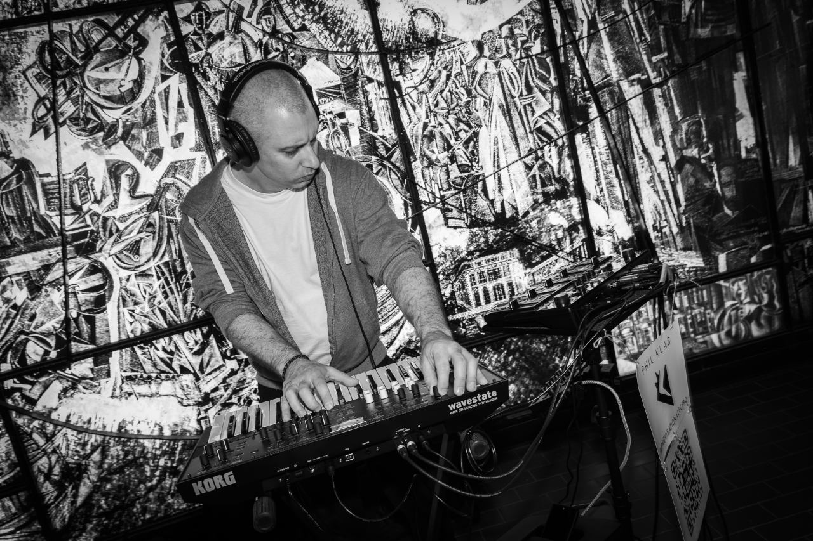
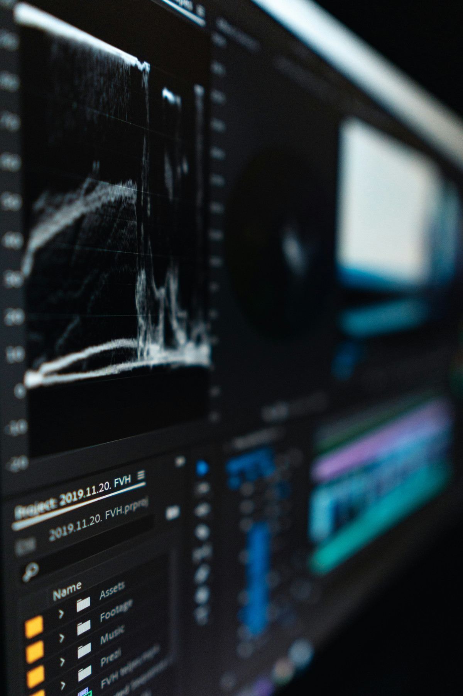

Phil Klab occupe un territoire sonore rare : celui où l'architecture du néo-classique rencontre la pulsation de l'ambient techno, où les textures denses de l'électronique contemporaine épousent des lignes de basse profondément ancrées dans le jazz-funk.
Une double nature — musicien formé, électronicien instinctif — qui rend son univers immédiatement reconnaissable.


"À 18 ans, après neuf années académiques dans la musique, les concerts et les studios, j'avais besoin de voir autre chose. J'ai étudié la philosophie. J'ai travaillé dans des restaurants, des entrepôts, comme cuisinier, comme charpentier, comme courrier à vélo dans les rues de Montréal. Vingt métiers, vingt façons différentes de me redéfinir et de nourrir ma créativité.
La musique n'avait pas disparu — elle attendait. Et peu à peu, elle a repris sa place. Pas comme une obligation ou un retour en arrière, mais comme une évidence qu'on finit toujours par retrouver.
Phil Klab est né de ça : de quelqu'un qui revient avec quelque chose à dire.
Phil Klab
Philippe Labonté (Phil Klab) est un compositeur et performer électronique basé à Montréal. Formé au piano classique dès l'enfance, il développe en parallèle une pratique de l'improvisation jazz et de la musique électronique pendant plus de vingt ans. Après une longue parenthèse loin des scènes et des studios, il reprend la composition en 2024 sous le nom Phil Klab, avec un ancrage résolu dans l'électronique live.
À 15 ans, il remporte à la fois le prix du jury et celui du public au concours québécois
de composition orchestrale, grâce à son œuvre "L'odyssée fantastique". Durant son adolescence,
il s'ouvre au jazz et développe une maîtrise de l'improvisation qui deviendra un pilier de son
identité artistique.
En 2025, il investit les stations de métro et les parcs de Montréal avec un synthé et un loopstation — des sets d'improvisation d'une heure trente construits en temps réel devant des inconnus. La même année, il lance The Dopamine Synth, une série vidéo sur la conception sonore publiée sur YouTube et les réseaux sociaux.
Thunder & Silk, son premier album, paraît à l'été 2026.

Fais jouer les démos — et viens constater par toi-même.
Médias Sociaux
